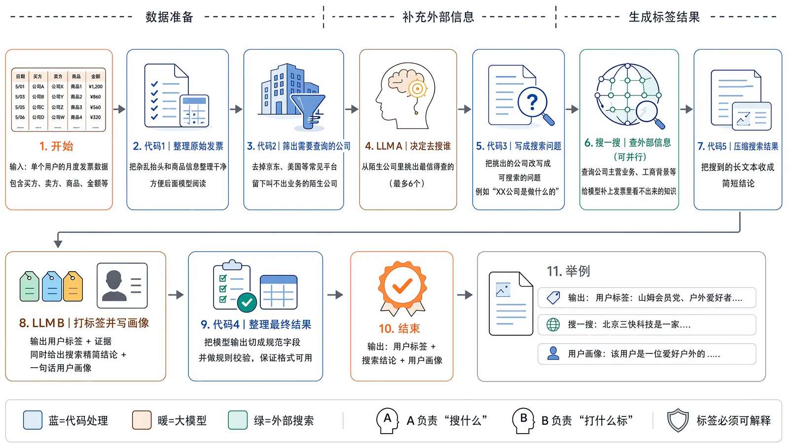
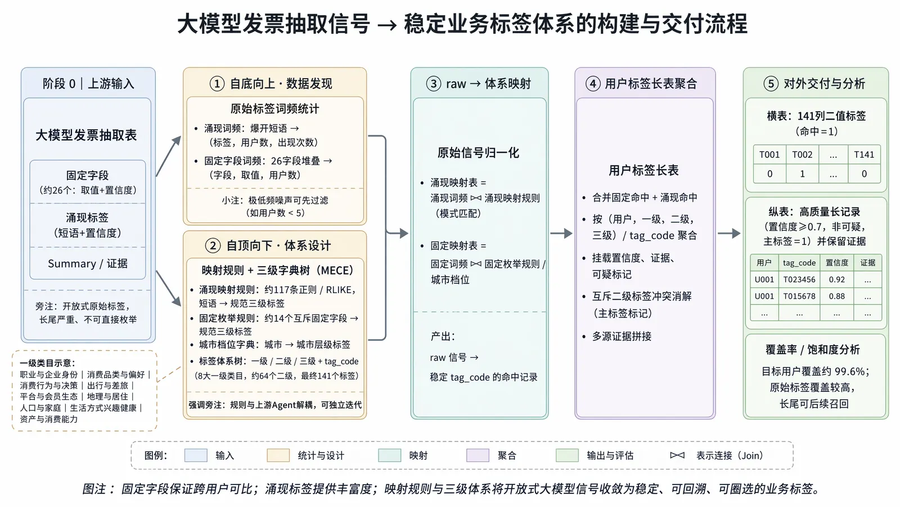
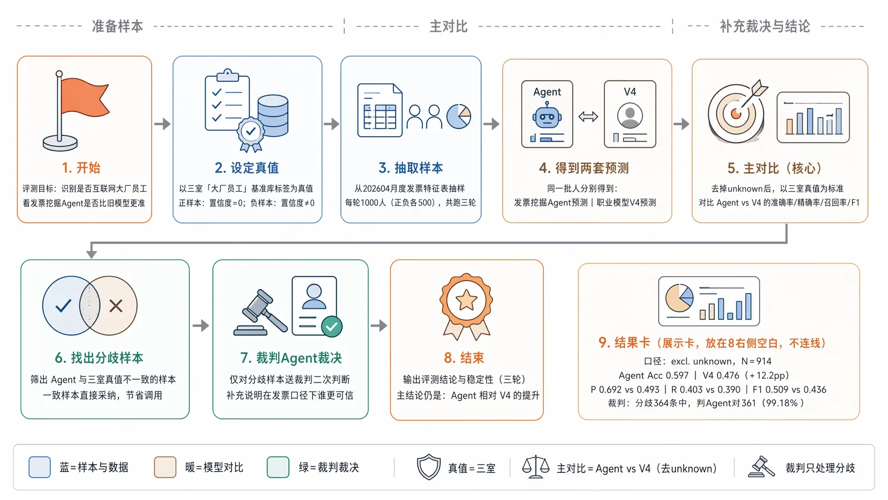

01 · 主要负责人 · 2026.01–2026.09
基于 AgentFlow 的用户标签挖掘：发票试点到商业支付规模化
针对发票数据信息密度高，用双 LLM Agent 做开放挖掘与三级体系归纳；工程提效与 9B-LoRA 压成本后，把同一套范式迁移到商业支付，完成 GPU 打种子与 CPU 分层泛化。
- 开通有发票覆盖
- ~200 万
- 170 万推理周期
- 10 天 → 4.64 天
- 支付标签去重覆盖
- 10.85 亿
项目背景｜发票数据信息密度高，涌现标签却不能直接入库
发票里的买方、卖方、商品、金额和活跃度能反映职业、消费偏好、出行和资产线索，但长期停留在原始字段或少量固定 Schema，很难进入圈选和策略。探索方向是以大模型 token 换人力：让 1–2 人快速挖出可解释标签，再收成可复用的用户标签体系。
难点不在“能不能生成词”，而在生成结果能不能用。开放挖掘会涌出 200 万+ 标签，去重后仍约 98 万种，长尾、同义、粒度不一，不能直接入库圈人。同时，中小微商户和主体简称缺少世界知识，无约束生成容易幻觉；全量打标若一直跑 27B，成本和时延也无法按月交付。
因此项目分成两段：先在发票上跑通「开放挖掘 + 稳定归纳 + 可评测 + 可降本」，再把同一套范式迁到信息密度更高、规模更大的商业支付。
项目目标｜正确性、稳定性、可行性同时成立
发票试点要同时打中三件事。正确性：把大模型约束在抽取式证据上，避免幻觉硬判。稳定性：把长尾造词收成 9 / 64 / 141 的 MECE 三级体系，让标签可入库、可圈选、可独立迭代。可行性：在不砍检索、不伤 F1 的前提下，把约 170 万样本的推理从按月交不出，压到按月可交付。
支付阶段的目标不是再做一个发票 Agent，而是把 GPU 上的高质量种子 $Y$ 和原文 Evidence，接到 CPU 上的规则、树模型和可迭代小模型，支撑十亿级覆盖。
技术路径｜先发票试点，再支付规模化
第一步：发票挖掘链路。 AgentFlow 按「代码做确定性规则，LLM 做语义判断」拆成四步：数据准备（月度流水聚合、国民品牌白名单、陌生实体候选池）→ 知识补全（LLM-A 精筛 Top 6、搜一搜 Tool-use、工商主营结构化注入）→ 多维挖掘（LLM-B 开放涌现、流水指针强制回挂、自然语言 Summary）→ 格式校验（JSON 强校验、字面证据一致性、高置信度输出）。每条标签统一给出 value、confidence 和引用真实买方 / 卖方 / 商品的 evidence。

第二步：三级体系归纳。 自顶向下用 MECE 树规范 9 个一级、64 个二级、141 个三级标签，统一编码为 tag_code；自底向上做同义归并、粒度对齐，并用 Lift 驱动组合与负向排除。置信度 ≥ 0.7 的高质量标签覆盖率 99.57%。固定字段保证跨用户可比，开放标签保留丰富度，映射规则把两者收敛成用户标签长表。

| 一级主题（L1） | 二级主题（L2） | 代表性标签（L3 · 示例） |
|---|---|---|
| 人口与家庭 | 家庭结构 | 独居青年 · 有子女家庭 · 育儿人群 |
| 职业与企业身份 | 职业 / 企业 | 互联网从业者 · 外企员工 · 企业主 / 高管 |
| 出行与差旅 | 商务差旅 / 车辆 | 商务差旅 · 燃油车主 · 新能源车主 |
| 消费品类与偏好 | 会员 / 消费偏好 | 仓储会员店 · 高端消费 · 母婴消费 |
| 平台与会员生态 | 平台会员 | 电商深度会员 · 视频 / 音乐会员 |
| 地理与居住 | 城市层级 / 居住 | 一线城市 · 新一线城市 · 租房 / 自有住房 |
| 生活方式兴趣健康 | 兴趣 / 健康 | 健身运动 · 健康关注者 · 露营 / 户外 |
| 消费行为与决策 | 消费能力 / 活跃 | 中高消费 · 价格敏感 · 高频活跃 |
| 资产与消费能力 | 资产 | 车辆资产 · 优质企业关联 |
第三步：无先验真值下的评测。 开放标签没有现成 Ground Truth。评测上用独立模型标注 500 条金标，覆盖 26 维画像和涌现标签，并引入有效涌现密度 EDD；同时把已有互联网员工库当作业务真值做二分类。与员工库判定不一致的 364 条争议样本，再交给第三方裁判 Agent 双盲仲裁，避免只凭自评置信度做硬判。

| 方案 | Accuracy | Precision | 去除 Unknown | 裁判支持率 |
|---|---|---|---|---|
| V4 基线 | 0.4903 | 0.4876 | 0.4903 | — |
| AgentFlow | 0.5920 | 0.6748 | 0.6120 | 99.18% |
| 相对增益 | +10.2pp | +18.7pp | +12.15pp | 361 / 364 |
第四步：知识补全与工程提效。 搜一搜动态补全率 94.5%，用来压「京东达新」这类简称幻觉；消融表明粗暴取消搜索虽更快，但 F1 会掉到 0.4816。真正能按月交付的组合是：Prefix-Cache 复用 KV Cache（提效 20.77%）、搜一搜结构化截断只留主营与前 300 字（提效 35.80%，F1 不损）、再切到 Qwen-27B 平衡质量与耗时。170 万样本推理从 10 天压到 4.64 天，综合提效 53.6%。
| 方案 | 1000 条耗时 | 提效 | 170 万耗时 | F1 |
|---|---|---|---|---|
| Baseline | 0.44h | — | 10 天 | 0.4891 |
| + Prefix-Cache | 0.35h | 20.77% | 7.92 天 | 0.4904 |
| + 取消搜一搜 | 0.25h | 42.49% | 5.75 天 | 0.4816 |
| + 搜一搜截断 | 0.28h | 35.80% | 6.42 天 | 0.4910 |
| + Qwen-27B | 0.20h | 53.60% | 4.64 天 | 0.4915 |
第五步：27B → 9B 的 LoRA SFT。 直接换小基座会联想变弱、格式遵从变差。做法是用 27B 离线产 20 万教师样本，规则清洗后再分层过采样、近义归并得到 5 万优质数据；推理链固定为 Evidence → Label，再用 LoRA 对 9B 做结构化 SFT，loss 约 0.13。5 万精筛把师生差距从 14.6% 收到 3.8%，标签种类覆盖教师 97.2%；证据直接挂回发票条目的比例 78.9%，高于 27B 教师的 76.0%。相同资源下 170 万耗时从 10 天降到约 1.4 天。
| 方案 | EDD | 证据回挂率 | 标签种类覆盖 | 师生差距 | 170 万耗时 |
|---|---|---|---|---|---|
| 9B Zero-shot | 2.15 | 41.2% | 38.5% | 72.1% | 1.4 天 |
| 20 万粗筛 | 4.73 | 62.5% | 81.0% | 14.6% | 1.4 天 |
| 5 万精筛 LoRA | 5.64 | 78.9% | 97.2% | 3.8% | 1.4 天 |
| 27B 教师 | 5.58 | 76.0% | 100% | 基准 | 10 天 |
第六步：商业支付的 GPU 打种子 + CPU 分层泛化。 发票只是试点。支付侧先把当月明细、近 12 月行为分层和资金 / 商户聚合摘要做成结构化上下文；GPU 上用级联双 Agent 打种子：LLM1 按人生阶段、居住通勤、消费心智等 11 维写无格式限制的语义报告，LLM2 只读报告做双轨映射（A 轨闭集对齐标准词，B 轨开集造词）并强制抄录流水指针作为 Evidence。CPU 侧已落地的是规则提纯 / Lookup 和树模型降维；针对高频标签的轻量 BERT 与 4B / 0.8B 蒸馏仍是后续探索，不计入已完成结果。
规则侧用多源交叉加负向排误，例如校园食堂 × 餐卡充值 × 单笔 13–22 元，或仓储会员店命中山姆 / 开市客并排除「同款 / 平替 / 代购」。树模型把种子标签当 $Y$、支付基础特征当 $X$，把语义推理降成表格分类，在 CPU 上批量推理。
| 「有车一族」方案 | 查准率 | 召回率 | F1 |
|---|---|---|---|
| 规则 R1（宽松） | 0.792 | 0.941 | 0.860 |
| 规则 R3（严格） | 0.924 | 0.629 | 0.748 |
| 树模型阈值 0.45 | 0.882 | 0.864 | 0.873 |
| 树模型阈值 0.9 | 0.958 | 0.593 | 0.732 |
项目结果｜发票按月交付，支付完成十亿级泛化
发票试点已覆盖开通且有发票用户约 200 万，全量补齐 202508–202607 一年历史数据并部署运行。金标 Accuracy 0.592（较 V4 +10.2pp），Precision 0.6748（+18.7pp）；去除当月无线索样本后 Accuracy 再升 12.15pp。364 条争议样本中，裁判支持新方案 99.18%（361 / 364）。三级体系收成 141 个标准 L3，其中高风险区分度标签 40+ 个，置信度 ≥ 0.7 覆盖率 99.57%。
工程上，170 万推理从约 10 天压至 4.64 天（提效 53.6%）。9B-LoRA 在相同资源下提效超过 4 倍，170 万约 1.4 天，证据回挂率 78.9%，标签种类覆盖教师 97.2%，师生差距 3.8%。
标签进入业务使用时，不按单个涌现词圈人，而是先沉淀为 tag_code、一级主题、二级主题和可读标签名。例如“商旅达人 / 差旅达人 / 高频商务出行”统一到“商务差旅”；“燃油车主 / 新能源车主”归到车辆与出行。对外展示只保留 Lift 口径。下面是可评估标签样例：
| tag_code | l1 | l2 | tag_name | 违约0+金额占比 Lift | 违约7+金额占比 Lift |
|---|---|---|---|---|---|
| P08-01-001 | 职业与企业身份 | 企业 | 外企 | 0.55 | 0.53 |
| P07-01-001 | 生活方式兴趣健康 | 健康 | 健康关注者 | 0.55 | 0.56 |
| P02-04-001 | 出行与差旅 | 出行 | 短途/多平台出行 | 0.59 | 0.51 |
| P04-02-001 | 平台与会员生态 | 商超 | 仓储会员店 | 0.61 | 0.67 |
| P07-01-002 | 生活方式兴趣健康 | 健康 | 健身运动 | 0.64 | 0.99 |
支付阶段已完成 51 个核心种子标签，沉淀到月分区纵表，去重覆盖 10.85 亿支付用户，累计打标 33.9 亿人次（人均 3.1 个标签）。以「有车一族」为例：GPU 9B-LoRA 最接近 27B，用于高精探索；CPU 树模型 F1 达 0.873，相对 GPU 约提效 1 万倍，作为全量主力；CPU 纯规则相对 GPU 约提效 10 万倍，单分区回补约 1–2 小时。BERT / 极小模型蒸馏仍属规划，未当作已上线结果。
最终交付不是一批一次性短语，而是可入库、可圈选、可评估的标签资产：发票侧保留语义丰富度并按月交付，支付侧用 CPU 把种子标签铺到十亿级用户。